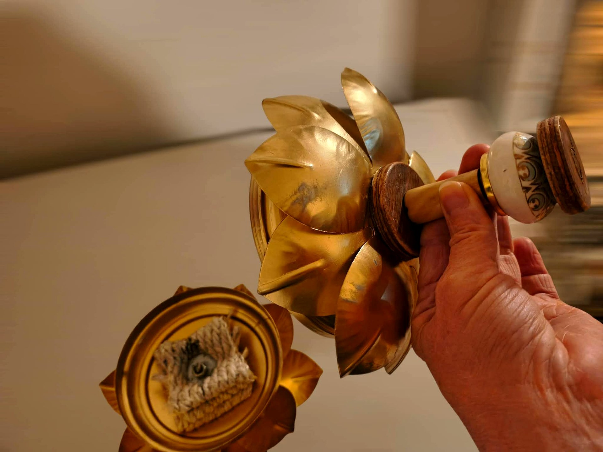
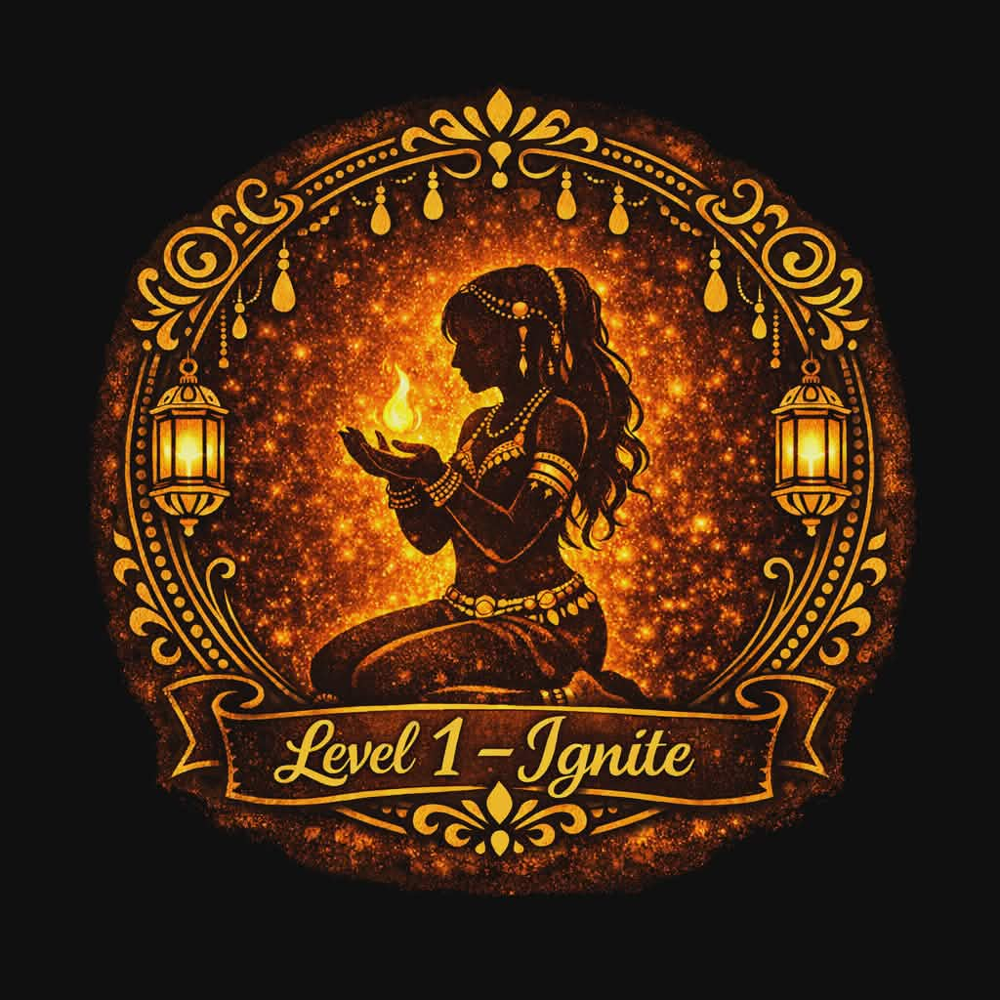
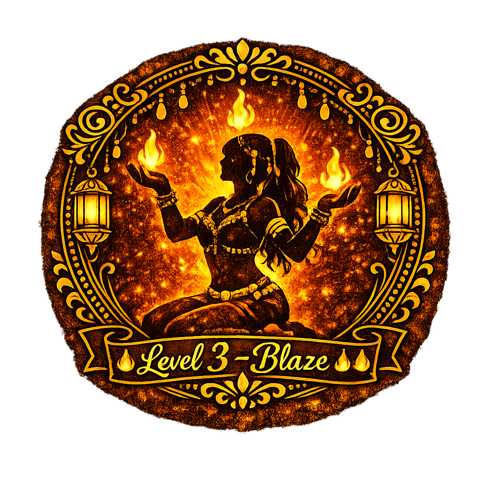
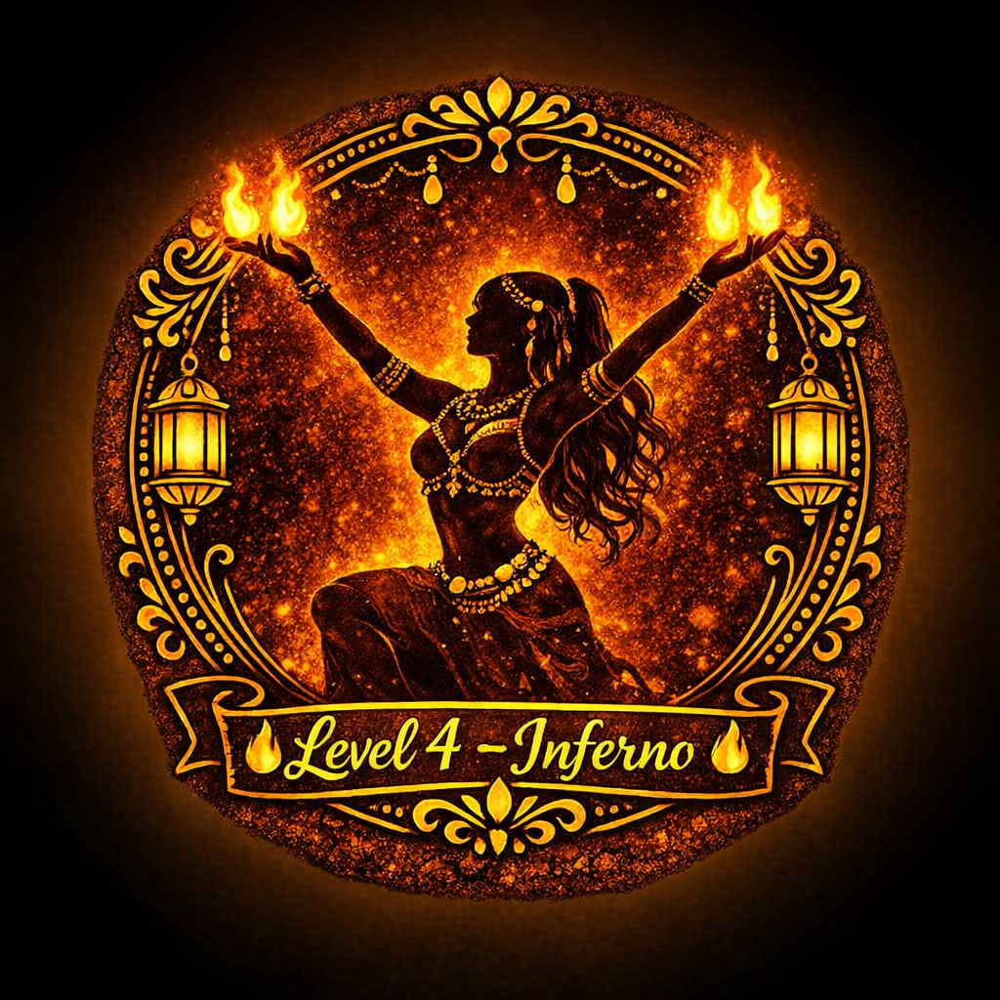
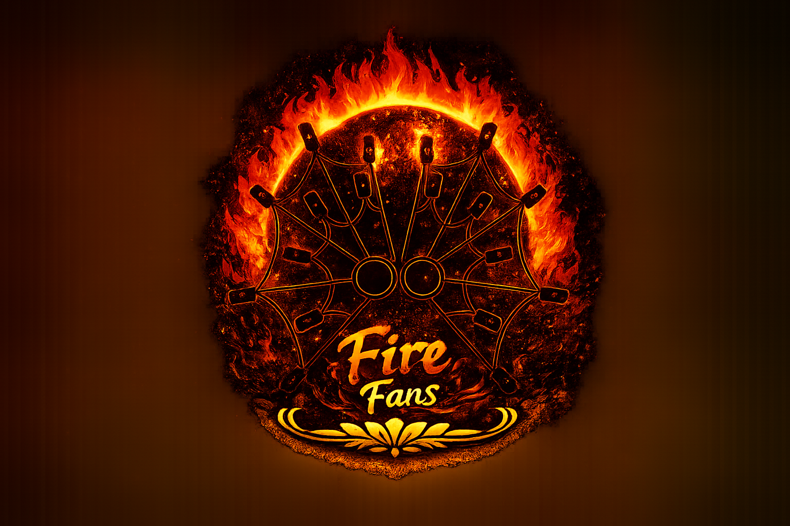

The FN&TT Fire Program
A structured, safety-first fire arts training program — from your very first cold-prop class all the way to approved fire performance. Four levels. Clear milestones. Real mastery.

The 4-Level Certification Path
Every fire artist at FN&TT progresses through four defined levels — each with clear skills, safety requirements, and milestones before advancing.

Level 1 — Ignite
Level 2 — Kindle

Level 3 — Blaze

Level 4 — Inferno
🔥 Level 1 — Ignite (Beginner)
Cold prop handling, safety awareness, prop anatomy, basic choreography with fire fans and other props. No flame until all Level 1 requirements are met.
Prerequisite: Fire Pathway Prep class
🔥🔥 Level 2 — Kindle (Improver)
First supervised light sessions. Introduction to fueling, wicking, and fire safety protocols. Expanding prop choreography vocabulary with live flame.
Prerequisite: Level 1 certification
🔥🔥🔥 Level 3 — Blaze (Intermediate)
Advanced prop work, multi-prop sequences, performance readiness. Developing signature fire choreography and group performance skills.
Prerequisite: Level 2 certification
🔥🔥🔥🔥 Level 4 — Inferno (Performance Ready)
Approved for public fire performance. Full fire safety officer training, performance coordination, mentorship responsibilities. The pinnacle of the FN&TT fire path.
Prerequisite: Level 3 certification + instructor approval
Fire Props
The FN&TT Fire Program covers a range of fire props, introduced progressively as you advance through the certification levels:
- 🔥 Fire Fans
- 🔥 Fire Bowls
- 🔥 Fire Palms
- 🔥 Candles (cold prop intro)
- 🔥 Veils & Fan Veils
- 🔥 Additional props introduced at advanced levels

Safety First — Always
Fire performance is a serious art form. At FN&TT, safety is never optional — it's the foundation everything else is built on. Our program follows structured safety protocols at every level, and no student progresses to live fire before they are ready.
- ✅ All fire classes held outdoors or in approved venues
- ✅ Safety spotter required at all live fire sessions
- ✅ Fire safety equipment on-site at all times
- ✅ Venue and local fire marshal approval required for public performance
- ✅ No solo fire practice until instructor-approved
How to Start
The fire program begins with the Fire Pathway Prep class — a no-flame session that introduces you to prop handling, safety, and the choreography foundation you'll need. This class is required before any supervised fire training.
Fire Pathway Prep runs alongside regular belly dance classes. Contact us to find out when the next session is scheduled.
Ask About the Fire Program View All ClassesReady to Walk Through Fire? 🔥
The fire path starts with a single class. We'd love to guide you on the journey.
Get Started